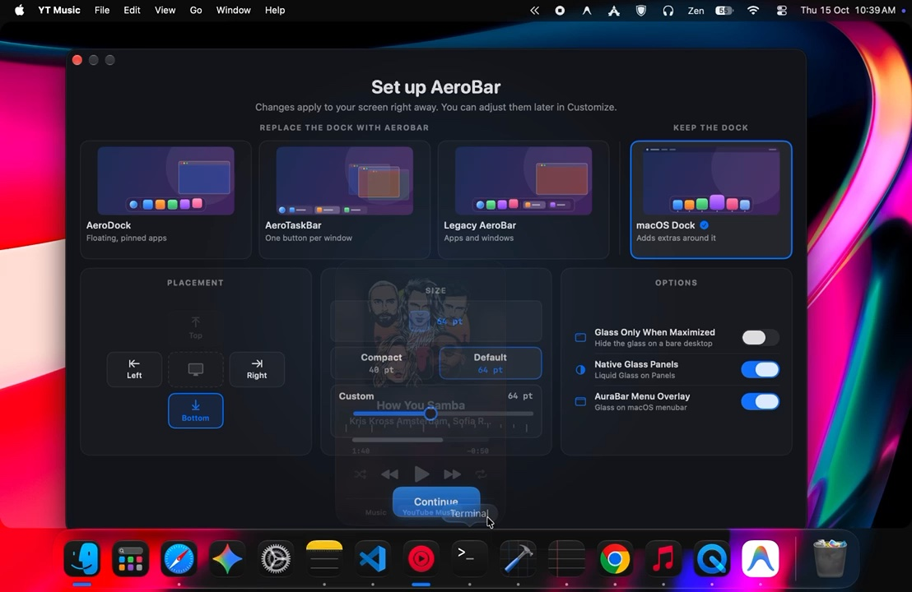
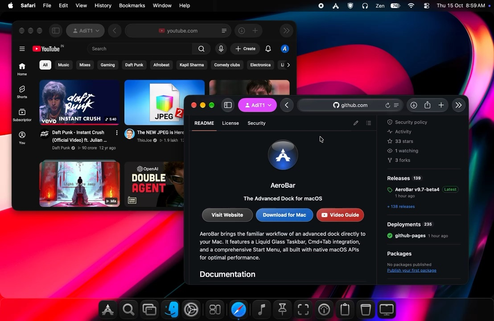
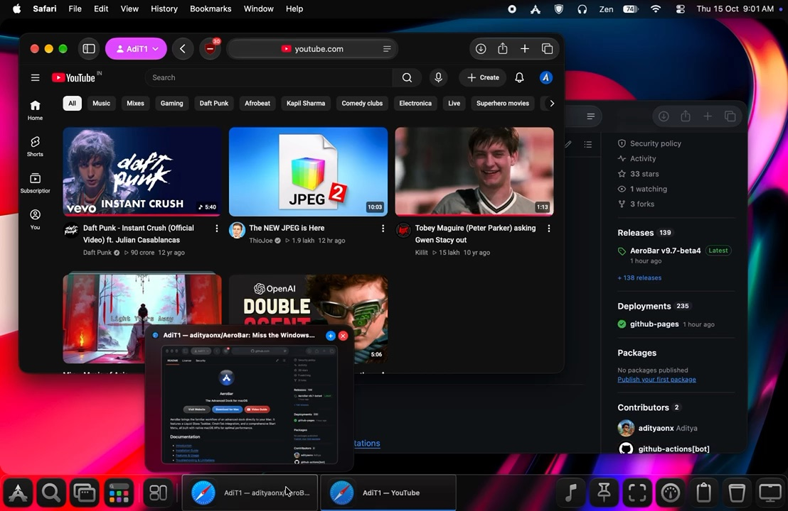
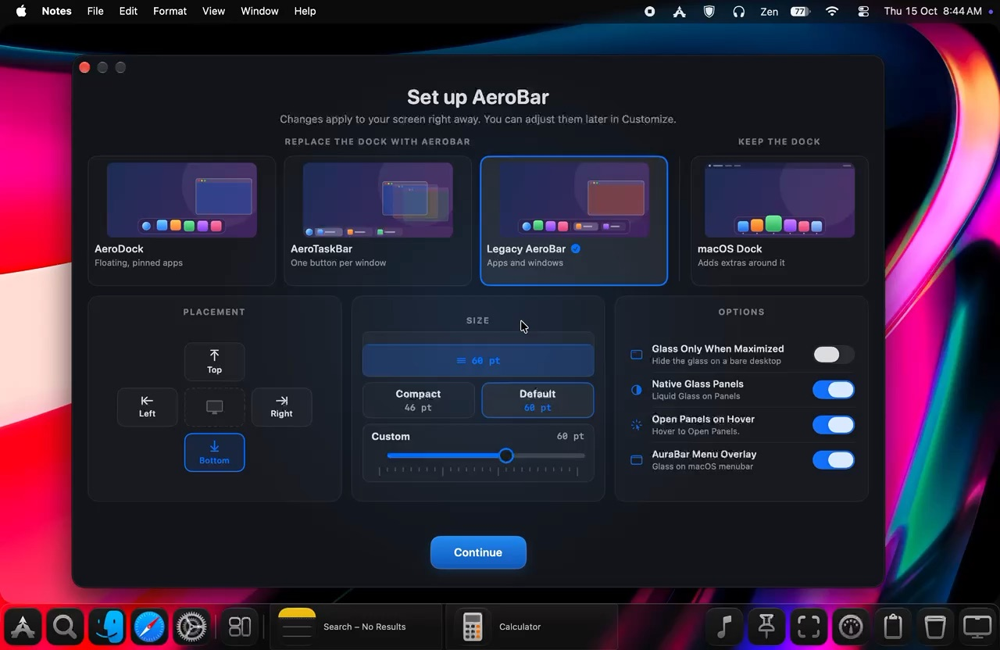
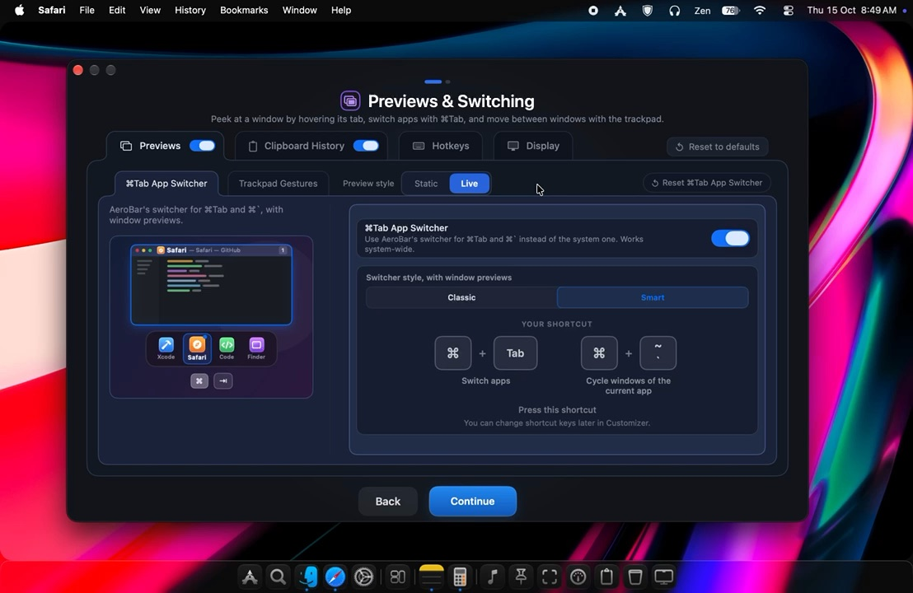
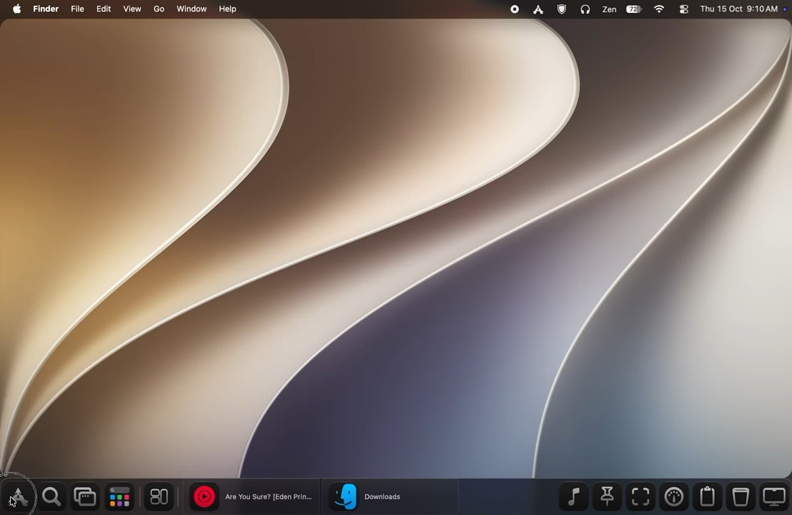
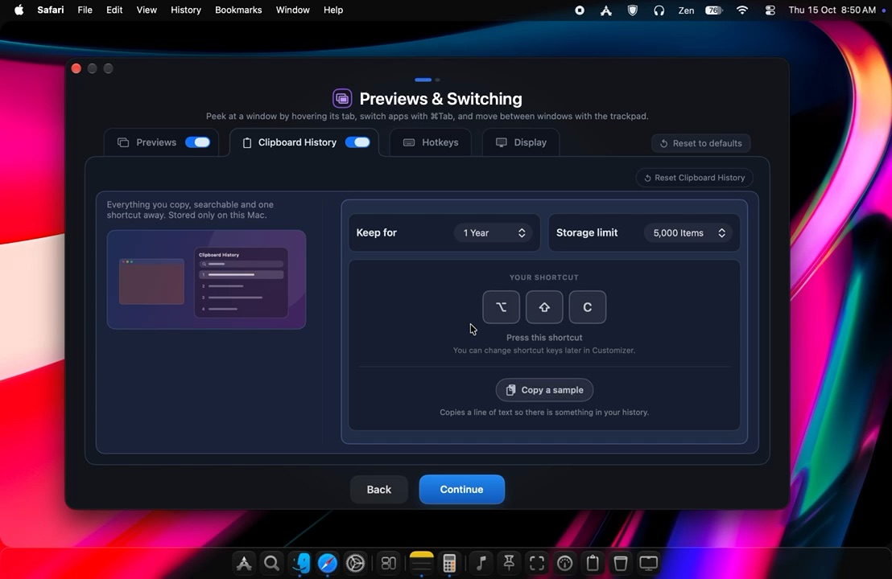
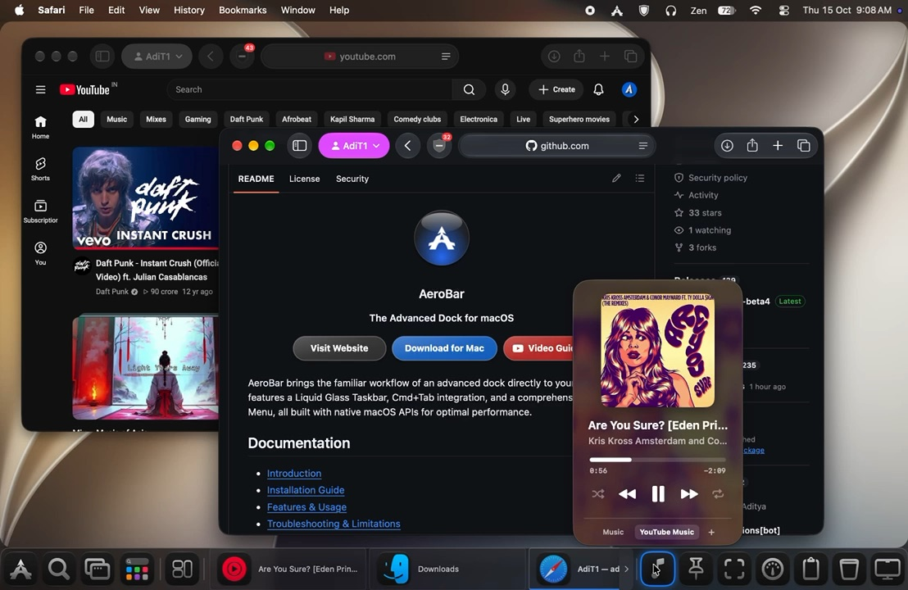

A taskbar for macOS. Or a better Dock.
Every window one click away, with live previews, a ⌘ Tab that switches windows, clipboard history and more. Run it as a taskbar, a floating dock, or on top of the real Dock.
Pro features are included during the public beta. Requires macOS 14 or later. Watch the video guide.

The bar and the menu bar take on the colour of the app you’re in.
Four ways to run it.
Switch any time in Customize. Put the bar on any edge of the screen and size it to taste.

macOS Dock + Extensions
Keeps the real Dock and wraps it in glass, with previews and quick actions around it.

AeroDock
A floating bar with pinned apps, window tabs and the Aero Orb at the start.

AeroTaskBar
A full-width bar with one button for every open window.

Legacy AeroBar
Pinned apps and open windows together in a single bar.
Set it up in under a minute.
Pick a mode, choose an edge, set the size. Everything stays editable later in Customize.
What it adds.
Window tabs and the Start Menu belong to the AeroBar modes. Previews, the switcher, clipboard history and the shelf work in all four.

⌘Tab, rebuilt.
A switcher with live window previews. ⌘Tab moves between apps and ⌘` between windows of one app. Include apps with no windows, go minimal, or pause it in apps that need the system switcher.

A Start Menu with real depth
Click the Aero Orb to search apps and files, pin favourites to a drag-to-reorder grid, open recent files, and lock, log out, restart or shut down.

Searchable clipboard history
Every snippet, link and code block you copy, with keyboard navigation, rich previews and an encrypted, password-protected backup.

Music, stats and a shelf.
Controls for Spotify, Apple Music or any web player. CPU, RAM and network at a glance. A shelf to park files and drag them out later. Each has its own hotkey.
Small things, in motion
Tailor every detail.
From glass tints to popup sizes, selection glows and borders. Make AeroBar match your desktop.
No telemetry. No analytics. No crash reporting. AeroBar works offline, and the code is GPL-3.0 so you can check. Read the privacy policy
Updates are signed, and the Update Basket checks each signature before installing. Links open in your browser only after you say yes. The beta code page keeps a small record per install, and the privacy policy lists exactly what.
Install in one command.
- Run the command, then open AeroBar.
- If macOS says the app is damaged, run the second command.
- Grant Accessibility access when asked, then click Start AeroBar.
Get the DMG
Install with Homebrew
If macOS says the app is damaged